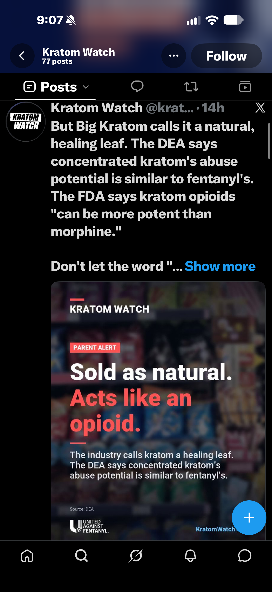
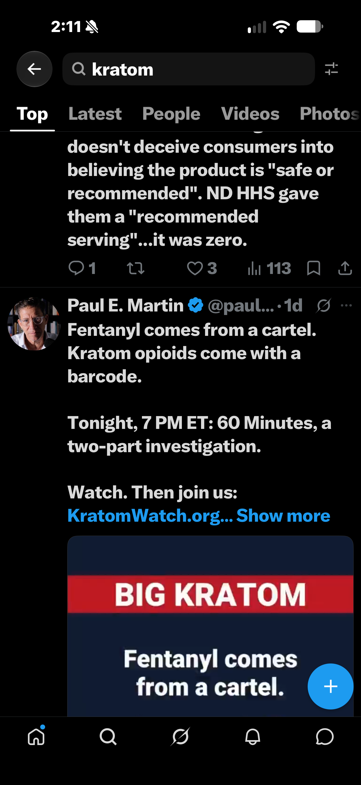
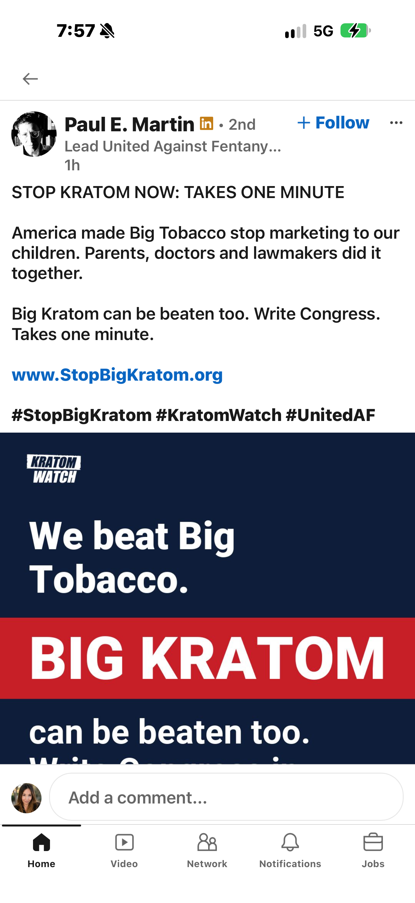
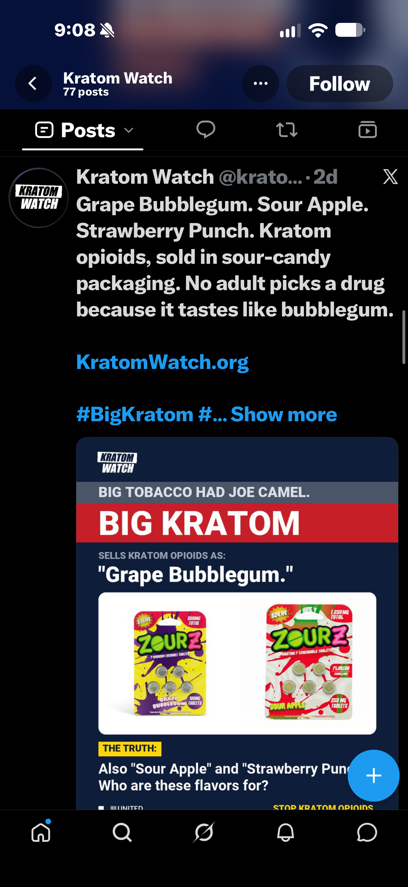
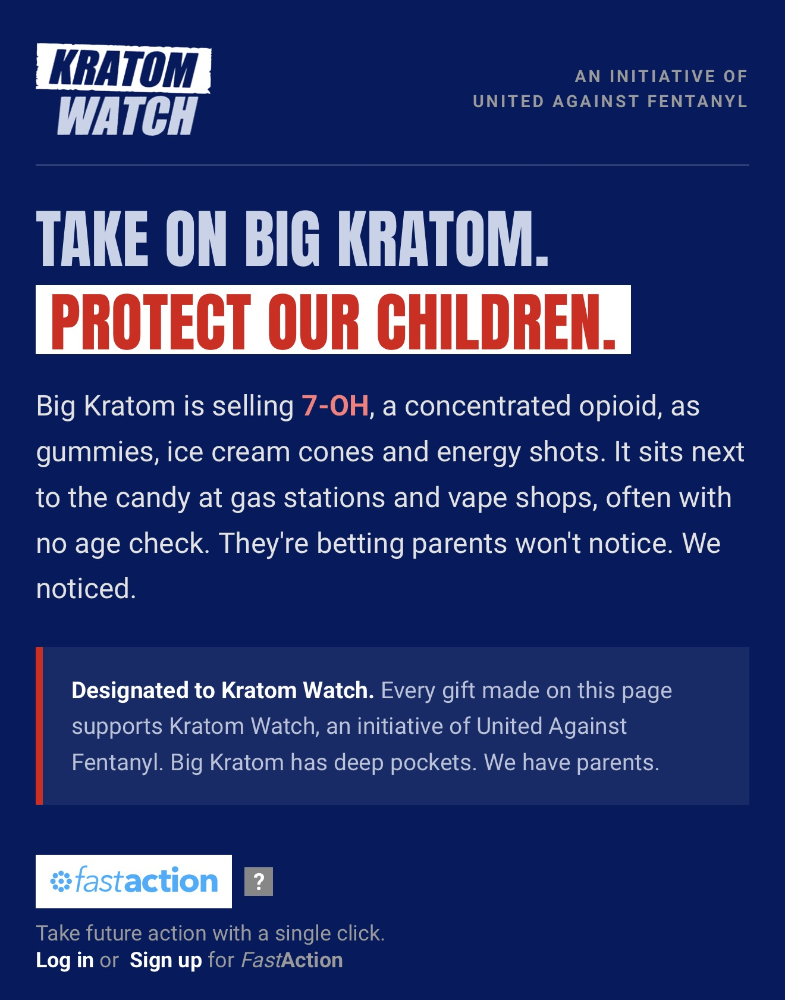
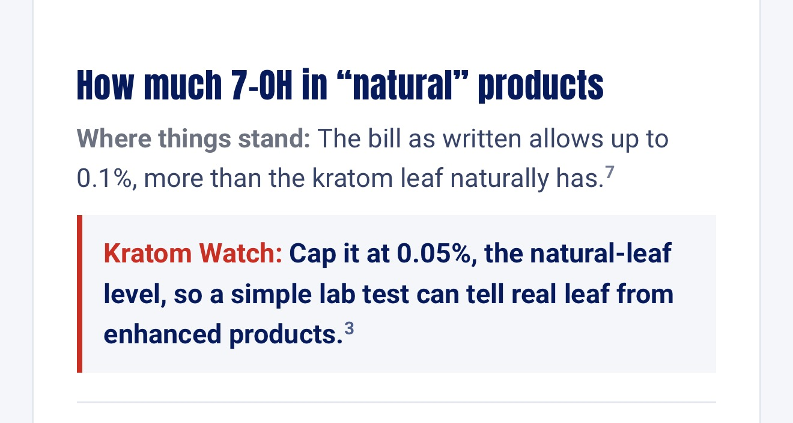
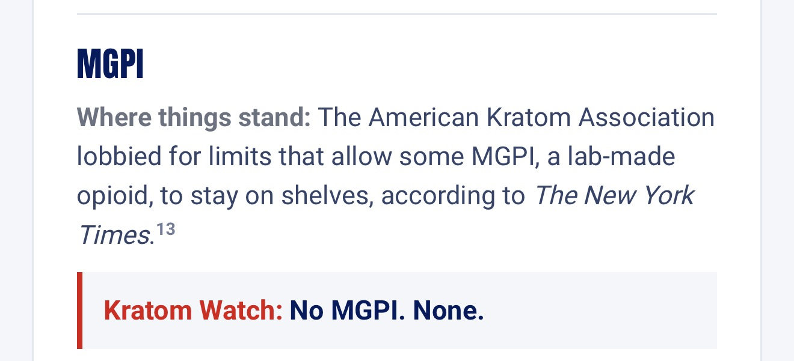
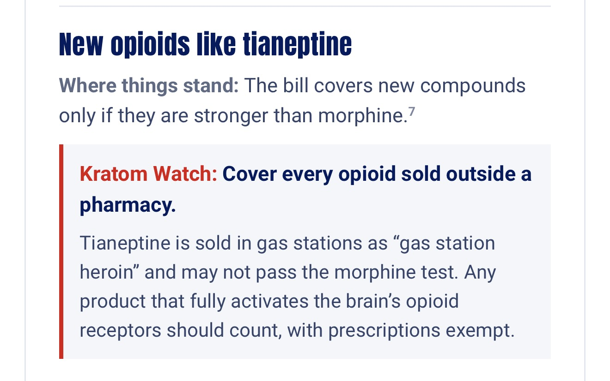

The promise and the policy
Kratom Watch, an initiative of United Against Fentanyl, invites parents to fight “Big Kratom.” Its fundraising page asks for gifts to support that mission. Its social media posts warn about opioid effects, candy-like products and the risks of treating kratom as a harmless leaf.
Then comes the letter the campaign wants constituents to send to Congress. It asks lawmakers to support the End Gas Station Heroin Act and states plainly that the bill would protect natural kratom. The letter even adds, “I support that goal.” The broader lobbying history makes that distinction worth examining, not merely accepting as a slogan.
A campaign can oppose concentrated derivatives while supporting botanical kratom. But when the public appeal sounds broader than the actual legislative objective, donors deserve to understand the difference before contributing.
That distinction matters because Kratom Watch itself identifies gaps in the bill. It calls for a stricter 7-OH threshold, no MGPI and wider coverage of other opioids, yet still asks lawmakers to cosponsor the bill as introduced and seek amendments. Proposed amendments are not enacted protections.
These documents raise questions about clarity and donor understanding. They do not establish fraud, diversion of donations or an unlawful solicitation.
Follow the policy, then follow the lobbying
Kratom Watch's public posts use broad warnings about kratom and its opioid effects. Its donation page urges parents to “Take On Big Kratom.” Yet its prepared congressional letter tells lawmakers that the End Gas Station Heroin Act would protect natural kratom and expressly says, “I support that goal.” That is not an accidental footnote. It is the policy the campaign asks its supporters to endorse.
There is an important industry connection to the broader campaign for this distinction. Jerry W. Ross, formerly Jerry Cash, founded Botanic Tonics, maker of the kratom-containing Feel Free drink. In June 2026, The New York Times reported that Ross's allies established a group called Stop Gas Station Heroin to promote natural kratom as safer than synthetic competitors, and that the group retained Checkmate Government Relations for lobbying. The Times described Ross's efforts to secure federal restrictions on competing synthetic products while defending natural kratom.
Read The New York Times investigation of Ross, Botanic Tonics and Stop Gas Station Heroin. Read the Senate Finance Committee letter to Ross. Read the introduced Senate bill.
The similarity in names and objectives is notable, but the record does not establish that Ross personally authored the End Gas Station Heroin Act or that he funds or directs Kratom Watch. The bill was introduced by Senator Bernie Moreno, with a House counterpart introduced by Representative Lance Gooden. The verified connection is Ross's involvement in an industry lobbying campaign promoting the same natural-versus-synthetic distinction that appears in the legislation Kratom Watch endorses.
The public-facing message is a fight against “Big Kratom.” The requested congressional action preserves natural kratom. Readers should know the difference, and the industry's documented interest in that difference, before signing or donating.
Follow the campaign's own words
Read the material in sequence. The posts establish how Kratom Watch presents the danger. The donation appeal shows how it asks for financial support. The policy screenshots and congressional letter show what it actually wants lawmakers to do.








Read the complete generated congressional letter (PDF)
The letter asks constituents to cosponsor S. 5383 and H.R. 10272, support a markup and seek two amendments. It explicitly endorses protecting natural kratom. Readers should examine the full letter rather than relying on selected excerpts.
What is actually worth reporting?
The strongest question is not whether an advocacy group is allowed to support botanical kratom. It is. Nor is it whether a fundraising slogan must recite every provision of a bill. It need not.
The question is whether the campaign's fundraising representations, considered together with the public posts, disclosures and letter, could give a materially inaccurate impression of the charitable purpose for which donations are solicited.
A complaint can ask a regulator to review the accuracy of the solicitation, applicable registration and disclosure obligations, and the relationship between the stated fundraising purpose and actual campaign activities. It should include the complete documents and any context favorable to the organization.
The slogan is “Take On Big Kratom.” The letter says “protecting natural kratom.” The campaign should be able to explain that distinction without relying on donors to discover it themselves.
The evidence does not prove fraudulent intent, financial misconduct, hidden industry payments or misuse of contributions. A petition signature alone is not necessarily a charitable donation.
Where to report fundraising concerns
For concerns about charitable solicitations, start with your state consumer protection office or attorney general. These official directories help you find the appropriate agency and its current complaint procedure. Some states have a separate charities regulator.
Find your state consumer protection office ↗
Find your state attorney general ↗
For Virginia charitable solicitation concerns, VDACS provides a complaint form. Include the solicitation, the complete congressional letter, and the specific representation you want reviewed. A disagreement over legislation alone does not establish a fundraising violation.
How to submit something regulators can use
- Identify the exact solicitation. Include the page URL, screenshot, date viewed, and the organization named on the appeal.
- Explain the specific concern. Quote the donation promise and the relevant sentence of the generated letter. Explain why you believe a reasonable donor might misunderstand the appeal.
- Attach primary documents. Include the donation screenshot, relevant policy screenshots, and the full PDF letter, not just excerpts.
- Describe your connection. If you donated, state when, how much, and what you understood. If you did not, say you are requesting a review of a public solicitation.
- Ask for an assessment. Request review of registration, solicitation disclosures, and any potentially misleading fundraising representations within the agency's jurisdiction.
- Keep the record accurate. Do not assert that funds were diverted, a crime occurred, or a particular person profited unless you have independent evidence.
Sample factual complaint description
Customize this description to your own evidence and experience. Do not imply you donated if you did not.